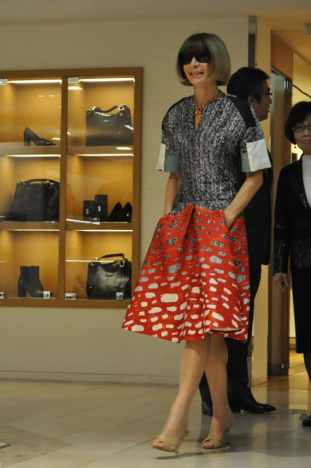
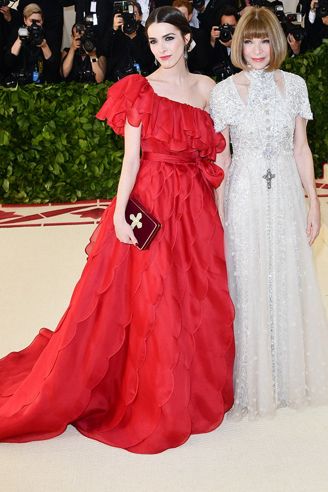

| logo | search |

| Born | 3 November 1949 (age 71) |
|---|---|
| Nationality | British |
| Citizenship | United Kingdom
United States |
Dame Anna Wintour is a British-American journalist, who has served as Editor-in-Chief of Vogue since 1988 and Global Chief Content Officer for Condé Nast since 2020; she is also the Artistic Director of Condé Nast and the Global Editorial Director of Vogue. With her trademark pageboy bob haircut and dark sunglasses, Wintour has become an important figure in much of the fashion world, praised for her eye for emerging fashion trends. Wintour is often regarded as the most powerful woman in media and fashion. Her reportedly aloof and demanding personality has earned her the nickname "Nuclear Wintour".
Her father, Charles Wintour, Editor of the London Evening Standard (1959–1976), consulted her on how to make the newspaper relevant to the youth of the era. She became interested in fashion as a teenager. Her career in fashion journalism began at two British magazines. Later, she moved to the US, with stints at New York and House & Garden. She returned to London and was the editor of British Vogue between 1985 and 1987. A year later, she assumed control of the franchise's magazine in New York, reviving what many saw as a stagnating publication. Her use of the magazine to shape the fashion industry has been the subject of debate within it. Animal rights activists have attacked her for promoting fur, while other critics have charged her with using the magazine to promote elitist views of femininity and beauty.
A former personal assistant, Lauren Weisberger, wrote the 2003 bestselling roman à clef The Devil Wears Prada, later made into a successful 2006 film starring Meryl Streep as Miranda Priestly, a fashion editor, believed to be based on Wintour. In 2009, Wintour was the focus of another film, R. J. Cutler's documentary, The September Issue.

© 2021 Kaori Era
| logo | link |